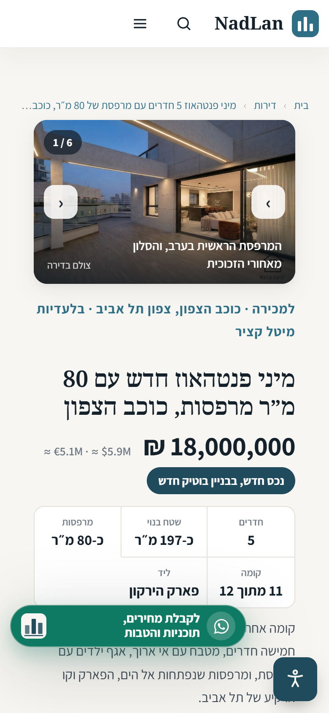
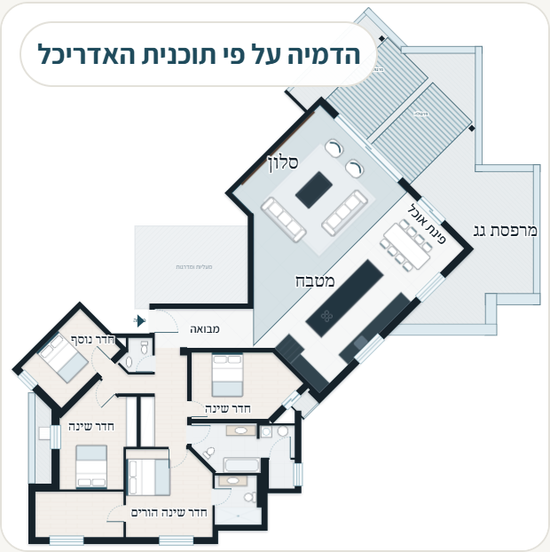
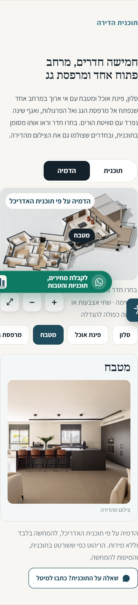
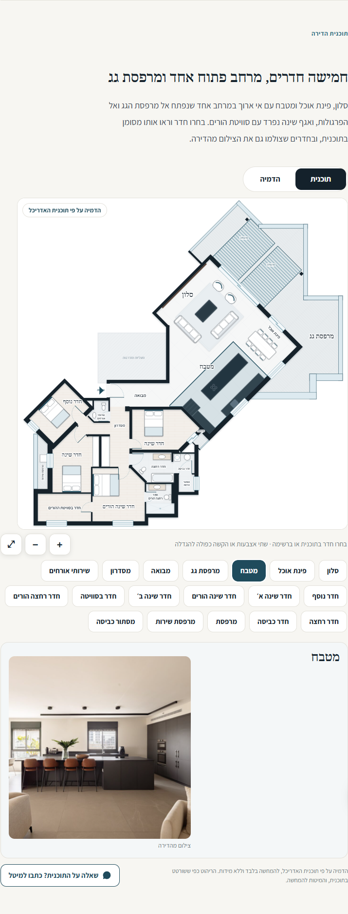
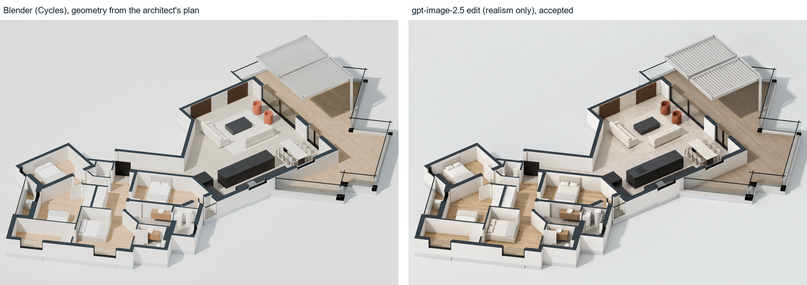
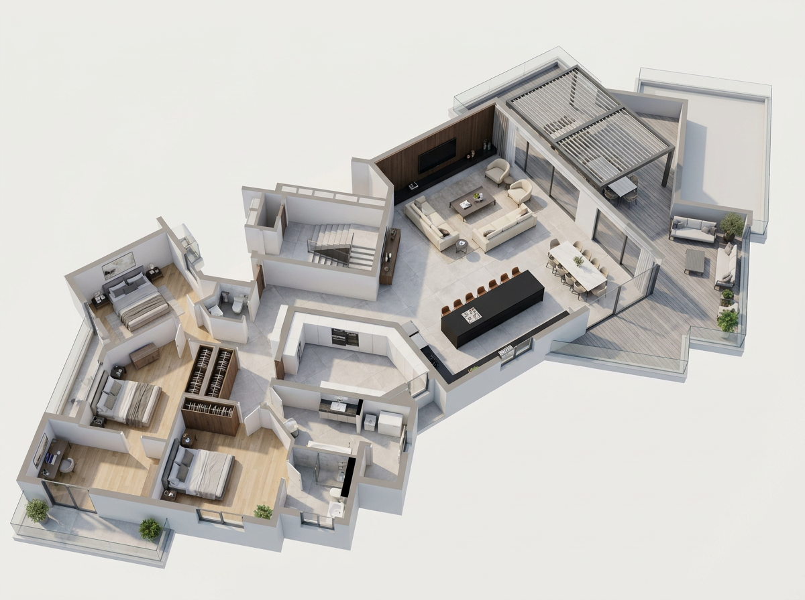
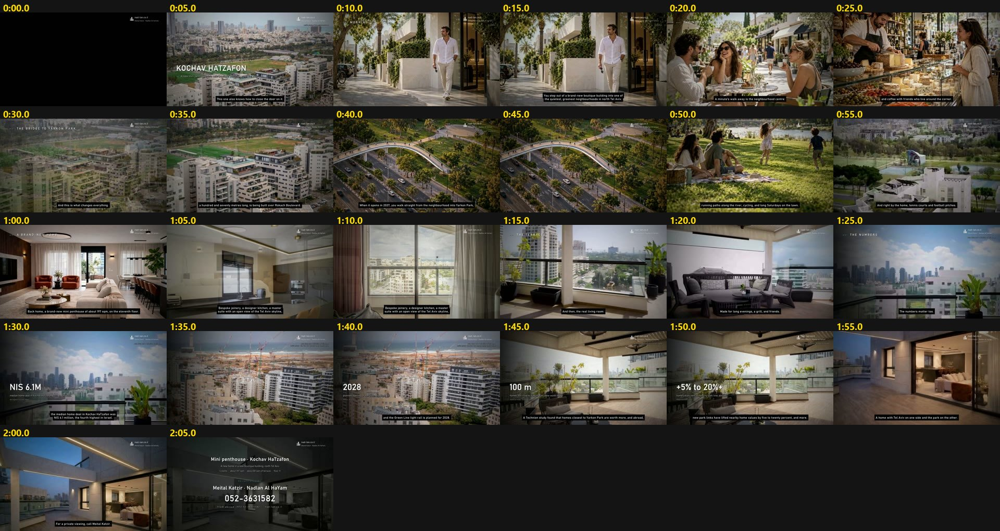

מיני פנטהאוז בכוכב הצפון: מה עלה היום, ההשוואה, והכלים
27.10.2026. כל התמונות כאן צולמו מהדף החי ב־nad-lan.co.il, בטלפון (390) ובמחשב (1280). התוכנית של האדריכלית עלתה בלי מידות, מתחת לסרט ולפני הגלריה. הסרט החדש עלה בשתי השפות.
01
מה עלה לאתר




02
מול 13 דפי הפנטהאוז המובילים בעולם ובישראל

| מה בודקים | הדפים המובילים | הדף שלנו |
|---|---|---|
| המחיר במסך הראשון בטלפון | חציון בגובה 534 | 511מעל החציון |
| תוכנית דירה במרחק הקשה אחת | 3 מתוך 13 בעולם, 0 בישראל | יש, כולל הדמיה וצילום לכל חדריתרון |
| בחירת חדר באצבע ורואים את הצילום שלו | לא נמצא באף דף | ישרק אצלנו |
| מחיר למטר בדף | משתנה | אין, לבקשת מיטל |
| מידות בתוכנית | בדרך כלל יש | אין, לבקשת מיטל |
| סרט | חלק מהדפים | סרט חדש: הצילומים של מיטל, טניס וכדורגל, הכרטיס שלה בסוף |
| הדף נגלל דרך התוכנית | לא נבדק אצלם | נבדק: אצבע למעלה גוללת 225 פיקסלים גם כשהתוכנית מוגדלת |
03
כל כלי, מה עשה, ומה נדחה
| כלי | מה עשה | הוכחה |
|---|---|---|
| Blender 5.2 | בנה את הדירה בתלת ממד מהקירות שנמדדו על התוכנית (בדיקת קנה מידה על 5 מידות, סטייה עד 1.5%) | 3 רינדורים ב־2400 פיקסלים, 205 עד 636 שניות כל אחד |
| ChatGPT (gpt-image-2.5) | שכבת ריאליזם בלבד על הרינדור, בלי לשנות קיר | 94% מהקווים במקומם (בדיקת קצוות). גרסה שהוסיפה שטיח, ומרפסת שקיבלה ים מומצא: נדחו |
| Nano Banana (Gemini 2.1 ו־Pro) | 3 הדמיות ישירות מהתוכנית | נדחו שלושתן: חדר המדרגות של הבניין הפך למדרגות בתוך הדירה, מטבח בצורת ח׳ במקום אי, רהיטים על המרפסת |
| Gemini 3.8 (Antigravity) | שני סבבי ביקורת על ההדמיות | תוקנו: רצפה, דק, חזית, קיר האגוז, הכורסאות. נדחו 4 הערות שסותרות את התוכנית |
| Codex (gpt-6-astra) | שתי ביקורות קוד: המסך הראשון, והתוכנית | 8 ממצאים בתוכנית, כולם תוקנו (גלילה כשמוגדל, צביטה, קוראי מסך) |
| בדיקות בדפדפן | טלפון ומחשב, עברית ואנגלית, על הדף החי | אפס שגיאות, כותרת ראשית אחת, אין גלילה לצדדים, הסרט נטען (2:07) |


04
הסרט החדש: פריים כל 5 שניות
